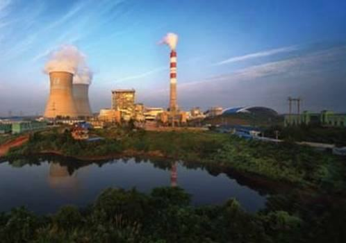
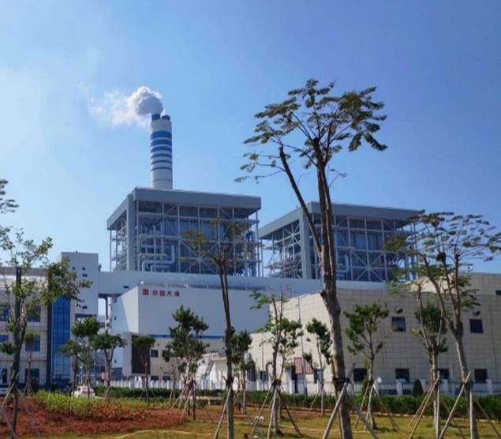
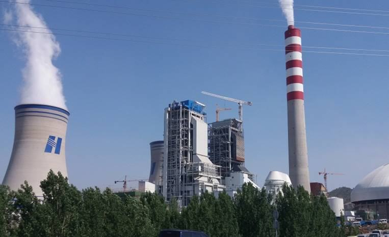

超超临界二次锅炉是当今世界上最先进的高效清洁燃煤发电装备，代表了一个国家发电装备的研制能力和水平。早期受金属材料、系统复杂、汽温达不到设计值等问题的制约，二次再热技术的高效清洁优势未能充分体现，出现发展停滞和设计参数反复的现象。
项目完成单位在黑龙江省应用技术研究与开发计划项目的支持下，立足自主创新，国内率先攻克了600MW、1000MW等级二次再热超超临界燃煤机组锅炉炉膛选型、受热面匹配、水冷壁设计、燃烧系统设计、受压元件材料选取、汽温调节、烟温和汽温偏差控制、锅炉运行控制等关键技术，研制出国内首台660MW超超临界二次再热锅炉和国际上参数最高、容量最大的1000MW等级超超临界二次再热锅炉，并实现了工程示范和产业化推广应用。
本项目主要科技创新点包括：1）研究开发出二次再热超超临界燃煤机组锅炉整体设计布置方案，制定了不同炉型的炉膛选型导则。2）研究开发出适合二次再热超超临界锅炉的高效、低NOx燃烧系统设计关键技术。3）研究开发出适合二次再热超超临界锅炉炉内受热面耦合设计技术、蒸汽温度偏差控制技术及水动力安全技术。4）研究开发出适合二次再热超超临界锅炉汽温调节方式、烟气再循环系统等设计关键技术。
本项目研制科技成果投运后，锅炉运行安全可靠，性能优异，与常规超超临界锅炉相比，二次再热蒸汽参数更高，机组供电煤耗降低约20g/kW•h，机组效率提高约3%，节能减排效果更为显著。
截至目前，本项目研制成果已实现市场推广应用36台，合同额约180亿元。其中2020~2022三年实现销售收入164745万元，利润约21585万元，新增税收约21417万元，同时带动相关产业发展约400亿元，经济和社会效益十分显著。
经中国机械工业联合会和黑龙江省机械工业联合会组织行业专家鉴定，本项目科技成果“1000MW等级超超临界二次再热塔式锅炉研制及应用”、“660MW超超临界二次再热锅炉研制及应用”技术达到国际领先水平。
本项目获得发明专利授权3项，实用新型专利授权16项。“超超临界二次再热锅炉研制及产业化”获中国机械工业优秀科技成果转化项目奖，“1000MW等级超超临界二次再热塔式锅炉研制及应用”和“600MW超超临界二次再热锅炉研制及应用”均获黑龙江省机械工业科学技术一等奖。
本项目研制的超超临界二次再热燃煤锅炉，代表了当前国际上大容量高参数燃煤电站锅炉的最高水平，带领我国火力发电装备制造业实现了由中国制造到中国创造的跨越式发展，标志着我国电站锅炉行业已跻身世界领先行列，对我国火力发电行业的可持续发展和节能减排意义重大。
在黑龙江省应用技术研究与开发计划项目的支持下，项目团队立足自主创新，依托华能安源和华能莱芜等项目，国内率先攻克了二次再热超超临界燃煤机组锅炉炉膛选型技术、受热面匹配技术、水冷壁设计技术、燃烧系统设计技术、受压元件材料选取技术、汽温调节技术、烟气温度和蒸汽温度偏差控制技术、关键部件制造工艺、锅炉运行控制技术等关键技术，解决了超超临界二次再热锅炉蒸汽参数提高与运行安全性下降、额定参数难以达到额定值之间的矛盾，研制出国内首台660MW超超临界二次再热锅炉和国际上参数最高、容量最大的1000MW超超临界二次再热锅炉，并实现了工程示范和产业化推广应用。主要创新点如下。
研制出超超临界二次再热锅炉系列产品（见表1）。锅炉采用P型或塔式布置，单炉膛，水平浓淡燃烧器低NOx分级送风燃烧系统、角式切圆燃烧方式，炉膛采用螺旋管圈和垂直膜式水冷壁、带再循环泵启动系统、二次中间再热。
表1 超超临界二次再热炉型
序号
锅炉容量
炉型
主蒸汽压力（MPa.g）
过/再热汽温（℃）
1
600MW级
P型
605/623/623
2
600MW级
塔式
605/623/623
3
1000MW级
P型
605~610/625/625
4
1000MW级
塔式
605~610/625/625
基于燃用煤质特性、锅炉最大蒸发量及蒸汽参数，确定了600~1000MW超超临界二次再热锅炉的炉膛容积热负荷、炉膛截面负荷、燃烧器区域壁面热负荷、锅炉燃烬高度等关键技术参数的选型方法，形成了与之相适应的炉膛结构设计导则。研究了炉膛结构对炉内气固两相流场、炉内热负荷分布规律的影响，以及由此引起的对炉内燃烧过程、NOx生成、锅炉运行参数和结渣的潜在影响。同时辅以炉膛烟气流动过程和燃烧过程的实验研究和数值模拟，为炉膛设计提供了技术支持。
图2 超超临界二次再热锅炉（п型/塔式布置）
超超临界二次再热锅炉主蒸汽出口压力达到33MPa.g左右，高/低压再热器出口温度较常规超超临界锅炉提高20℃，达到623℃，对锅炉各级受热面换热量的匹配提出很高要求。本项目研究掌握了受热面布置方式、工质流程、烟气流程等对炉内及不同受热面区域换热特性的影响规律，以及阻抗分配对管束中工质流量、金属壁温、管子强度等的影响规律，开发了适于P型和塔式布置的超超临界二次再热锅炉性能计算软件，包括热力计算程序、壁温计算程序等。同时基于现场运行数据，完成了对计算程序的校验与升级，确保计算软件的准确性、可靠性。
研究并掌握了燃烧器结构布置方法、防止炉内结渣的炉内空气动力场的组织方法、煤粉细度对锅炉结渣、再热器烟气区域温度场的影响等关键技术。开发出与炉膛结构、制粉系统、烟气再循环系统相耦合的切圆直流燃烧器系统设计技术及低NOx燃烧技术。
图3 炉膛中截面CO浓度分布 图4 对角截面NO浓度分布
针对烟气再循环系统技术开发，开展了大量试验研究和数值模拟，获得了不同工况、不同烟气再循环份额、不同引入方式对着火稳定、煤粉燃尽、NOx生成、炉膛出口烟温等的影响规律。研究掌握了烟气再循环复合燃烧方式下炉内燃烧动力场特性、烟气热流分布特性。建立了控制炉内烟温偏差、结焦、高温腐蚀准则，保证锅炉高效、安全、环保运行。
图5 高/低压末级再热器温度场分布 图6 各级受热面传热模拟
研究掌握了材料在运行温度下的高温性能、长期时效性能、组织变化规律及材料的抗氧化性能、成形加工工艺或热加工工艺、热处理对材料性能的影响规律等。通过深入分析在不同负荷工况下各级受热面热量分配特性、锅炉高压端内的工质流动规律、复合调温方式对主再热蒸汽汽温影响规律，掌握了不同烟气再循环份额及不同引入方式对炉内温度场的影响规律。创新过热器、一/二次再热器融合设计准则，形成了工质侧热负荷偏差控制方法，建立了工质耦合式调温控温策略，保证在不同工况下锅炉主再热蒸汽达到额定汽温。
相比常规超超临界锅炉，二次再热锅炉主蒸汽压力提高6～7MPa.g，高压末级再热器压力提高4-6MPa，两级再热蒸汽温度提高20℃，出口段管接头、出口集箱均达到材料上限。本项目研究了管间阻抗及工质流量调整、材料应用特性与材料选取等对管子壁温及安全性的影响，确定了各级受热面结构、高温集箱设计技术及工质偏差控制方法。通过对管屏吊挂方式及吊挂材料的研究，解决了高温受热面材料接近使用极限条件下的固定难题。
掌握了不同负荷和变负荷工况下水动力特性、干湿分区动态特性，揭示了变负荷工况下膜态沸腾、传热恶化机理及干湿态转换特性规律，提出了抑制传热恶化的措施，建立了基于超超临界二次再热锅炉的水动力模型，形成了二次再热锅炉水动力计算方法。
基于数值计算，研究掌握了煤水比和喷水调温对过热蒸汽温度的影响规律、燃烧器摆动和喷水减温器对再热蒸汽温度的影响规律，研究掌握了过量空气系数变化、分隔烟道挡板角度调整等对过热蒸汽、低压再热蒸汽、高压再热蒸汽温度的影响规律。研究掌握了不同烟气再循环份额、不同引入方式对炉内温度场的影响规律，揭示了不同循环方式对各级受热面吸热量的影响规律，确立了最优的烟气再循环调温策略。研究和确定了烟气再循环、摆动燃烧器、煤水比、烟气挡板和过剩空气量多种调温方式的优化耦合方案，实现了对二次再热锅炉两个高温再热器和过热器蒸汽温度的有效调节控制，保证了机组运行参数达到设计值。
在集成各专项技术的基础上，基于示范工程，研究和掌握了烟气水分含量对烟气传热特性的影响，验证和掌握了实际运行中烟气再循环、一次风温、煤粉细度、氧量、一二次风动量比、燃尽风量等因素对炉内空气动力场、煤粉燃尽、炉内烟气特性、NOx生成、锅炉稳燃、各级受热面蒸汽温度的影响规律，确保锅炉的安全、高效运行。

